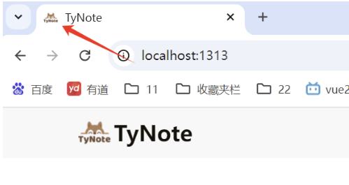
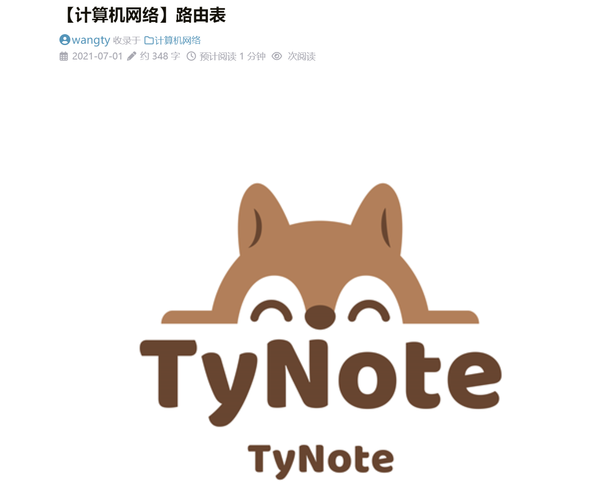

【HUGO】Hugo的LoveIt主题美化（一）
自定义网站图标
1. 主页头像
-
在 blog 根目录下找到文件夹
assets，打开该文件夹并新建文件夹images，把我们的主页头像图片avatar.png放到文件夹images中。 -
在 blog 根目录下找到配置文件
config.toml,在配置文件中找到# 主页配置 -> # 主页显示头像的 URL的参数avatarURL = ""。在""中填入主页头像图片在assets下的路径（这里填图片的URL亦可），最后则为avatarURL = "images/avatar.png"。 -
然后我们的 blog 主页就有头像了，如下图：


2. 网站名前的logo
-
同前面一样，先将 logo 图标
logo.png放到assets/images下。 -
在配置文件
config.toml中找到# 页面头部导航栏配置 -> # LOGO 的 URL的参数logo = ""。填入路径后将变为logo = "images/logo_ico.png"（当然图片URL亦可）。
这里我发现，如果使用.png的图片，图片大小控制不好的话,会导致图与文字排列奇怪。图标会将标题顶开一定的位置。
但是如果我们使用.ico的图片，那么这种情况就不会出现。然而logo这个参数本身并不支持.ico图片。因此我们需要把作为 logo 的.ico图片的后缀名改为.png，这样logo才能读取图片文件。
而如果你的 logo 图一开始是.png图片，那么可以通过这个网站在线修改为.ico图片。
-
然后我们的 blog 就有了显示正常的 logo 了，如下图：

3. 网站图标
注意与上面不同的是，我们要先将网站图标放到 blog 根目录的static文件夹下，而对于要放什么类型的图标我们有两种选择：
-
使用
.svg后缀的伸缩矢量图形：-
如果你的图标是
.png文件（其他的类似），则可以通过这个网站，在线地把.png转换为.svg文件。然后把这个.svg文件放到static文件夹即可。 -
然后在配置文件
config.toml中找到# 应用图标配置的参数svgFavicon = ""，不妨认为我们的.svg图标名为safari-pinned-tab.svg，那么我们只需修改参数为svgFavicon = "/safari-pinned-tab.svg"即可。
-
-
使用多尺寸的图标：
-
我们可以找到 LoveIt 主题文件里的配置文件
config.toml（路径为your_blog\themes\LoveIt\config.toml），可以发现svgFavicon参数为空，但是它的官网却也有网站图标。我们观察一下主题自带的exampleSite文件里的static（路径为your_blog\themes\LoveIt\exampleSite\static），可以发现里面有大小各异的网站图标，如下图： -
因此我们可以依葫芦画瓢，在我们 blog 根目录的
static文件夹里，放入我们各种大小的网站图标，如下图：（采用此方法，svgFavicon参数一定要为空，且各种大小的图标命名要和官方一致）在这里可以传入你想要的图片，很容易的生成这些文件。
-


然后我们的 blog 就有网站图标了，如下图：
文章头的参数
我们在根目录archetypes文件夹下修改的default.md。这个default.md实际是我们每篇文章头（如下图）的模板。
tags
此参数意为文章的标签，可以有多个，若要添加多个标签，只需按照如下形式即可（即用""引住标签内容，而,作为标签内容间的分隔）：
|
|
categories
此参数意为文章的分类，一篇文章可以同时存在于多个分类下（与 tags 参数类似），若要文章处于多个分类下，只需按照如下形式即可（即用""引住分类名称，而,作为分类名称间的分隔）：
|
|
share
此参数意为是否开启文章底部的分享功能。
comment
此参数意为是否开启文章底部的评论功能。
hiddenFromHomePage
此参数意为是否在主页隐藏本文章。
hiddenFromSearch
此参数意为是否在搜索时隐藏本文章。
summary
在主页中显示的对文章的描述性语言，如下图：

但如果不加，如下图：

那么hugo会自动将文章内容前半部分取过来，显示在描述这里，文章描述会很杂乱。
featuredImagePreview
这个参数为在主页显示的文章配图：我们可以对该参数添加图片URL，那么主页对应文章标题上方便会出现被裁剪后的配图，如下图：

但如果我们不加配图，如下图：

那么主页文章间的分割不明显，且不够花里胡哨。
featuredImage
这个参数与上个参数类似，但它在为主页添加配图的同时，也将图片（未裁剪的）添加至文章内容的开头，如下图：
链接和提示框
link
如果我们在 Markdown 文件中输入{{ < link "https://Wangty654.github.io" > }}，则在网页上会显示为https://Wangty654.github.io。
admonition 横幅
我们若在任意一个 Mardown 中输入：

则会出现如下效果：
- 其中参数 admonition type 为横幅的类型，一共有12种，分别为 note，abstract，info，tip，success，question，warning，failure，danger，bug，example，quote（其中默认值为note）。
- 参数 title 顾名思义是横幅的标题
- 参数 open 为横幅是否自动打开，默认是 true 打开。
其他的拓展 Shortcode
具体可见这里，而一些 Hugo 内置的 Shortcode 可见这里
关于页面
我们的 blog 往往会有一个"关于"页面来介绍自己，但我们一开始所给的配置参数并不包含这个页面，因此我们可以来添加该页面。
-
首先我们要在终端中来到 blog 的根目录，执行下面命令，在
content文件夹下创建一个about文件夹，并使其有文件index.md。一般读取都是读取路径包下的index.md文件，若没有多个文件，也可以建成单独的about.md -
这个
index.md或者about.md就是我们的"关于"页面。 -
然后我们还要在菜单栏配置中添加"关于"这一栏。在 blog 根目录下找到
config.toml,再在该配置下找到# 菜单配置，在这一项下添加：
|
|
- 这样，“关于"页面就创建好了。